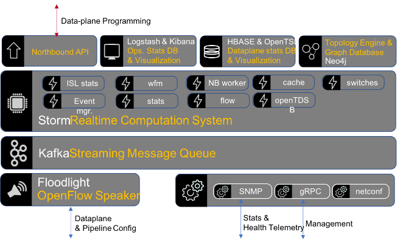

Introduction¶
This document describes OpenKilda design including main use cases, components design and their interactions.
Overall components interaction among Northbound, Kafka, Flow topology, Cache topology and Topology engine.
Flow Operations¶
https://github.com/telstra/open-kilda/blob/develop/docs/design/usecase/flow-crud.md “Flow Management design document”. The document describes main use cases for the flow operations create, delete, read, update and ping: Create Flow sequence diagram Create Flow sequence source file Delete Flow seqiecne diagram Delete Flow sequence source file https://github.com/telstra/open-kilda/tree/develop/docs/design/flow-ping/flow-ping.md “Flow Validation” mechanism description designed for sending pings along flow path in order to verify its latency and switch availability along the flow path Switch operations
https://github.com/telstra/open-kilda/blob/develop/docs/design/usecase/meter-delete.md “Delete meter” document describes the implementation of deleting a meter from the switch. Network discovery
https://github.com/telstra/open-kilda/blob/develop/docs/design/usecase/discovery/network-discovery.md “The document” contains network discovery design implemented in OpenKilda.
Flow Topology¶
https://github.com/telstra/open-kilda/blob/develop/docs/design/usecase/flow-topology-high-level.md “The document” contains high level flow topology design implemented in Storm. There is also overall https://github.com/telstra/open-kilda/blob/develop/docs/design/usecase/storm-topology-management.md “description” of the patterns as to how topologies work in OpenKilda in Storm.
Kafka¶
https://github.com/telstra/open-kilda/blob/develop/docs/design/kafka.md “The document” contains Kafka design implementation.
Path Computation Engine (PCE)¶
https://github.com/telstra/open-kilda/blob/develop/docs/design/path-computation.md “The document” contains high level PCE description.
Floodlight¶
https://github.com/telstra/open-kilda/blob/develop/docs/design/solutions/floodlight-guaranteed-processing/floodlight-guaranteed-processing.md “The document” floodlight design and implementation